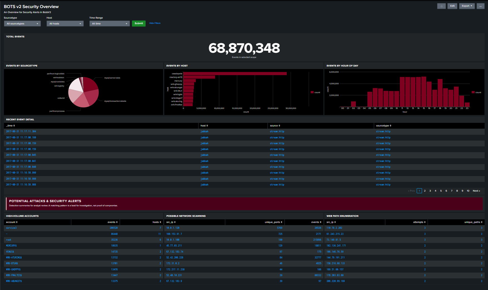

LAB / SIEM-01DATA OVERVIEW

SPLUNK · BOTS V2 ATTACK-ONLY DATASET
Splunk BOTS v2: SOC investigation workbook
Explored a multi-source security dataset, built SPL searches, examined web/DNS/authentication telemetry, and practiced Tier 1 alert triage.
68,870,348events in dashboard
103sourcetypes in workbook
Splunk SPLAlert triageLog analysis
Objective
Learn the available telemetry and use searches to investigate events, form hypotheses, and make evidence-based triage decisions using the BOTS v2 training dataset.
Work completed
- Reviewed dataset inventory, host and sourcetype counts, and event fields.
- Wrote SPL searches to filter HTTP errors, summarize event volumes, review DNS activity, and inspect Windows security events.
- Practiced structured triage, escalation decisions, and cautious classification of suspicious activity.
Evidence and interpretation
The dashboard displays 68,870,348 events. The workbook identifies 103 distinct sourcetypes and records exercises involving HTTP, DNS, Windows telemetry, and SMTP-related activity. The dataset contains historical training events from 2017; event volume or an unusual pattern alone does not prove malicious intent.
Supplied dashboard screenshot